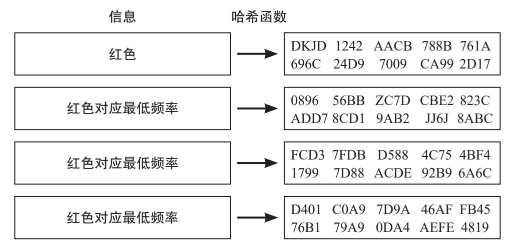
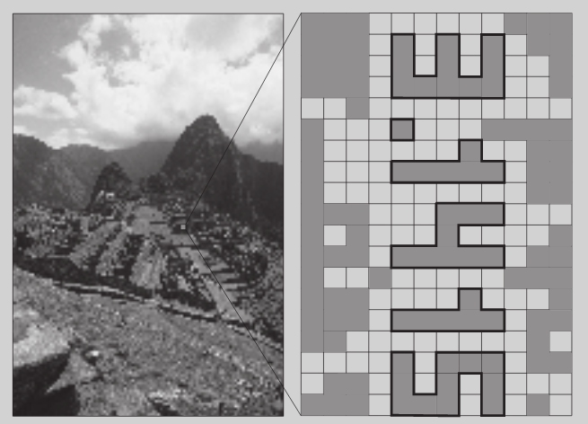

不同的公钥加密系统——或如PGP这样公钥和私钥的融合——确保信息传递具有较高的机密性。但是，像互联网这样的复杂通信系统，其安全就不仅仅在于机密性一条。
早在现代通信技术出现之前，大多数情况下，我们都是从认识的人那里获取信息，比如家人、朋友或因工作认识的人。但在今天，每个人面前都有多如牛毛的信息来源。仅仅通过阅读验证这些信息的真实性是不可能的，所有问题也因此而产生。比如，如何阻止某些人伪造电子邮件的源地址？
迪菲和赫尔曼提出了一种独创性的方法，使用公钥加密来确定信息来源。在这种加密系统中，发送者用接收者的公钥加密一条信息，接收者再用自己的私钥解译这条信息。迪菲和赫尔曼发现，RSA和其他类似的算法都体现出对称性。这一点很有意思，也就是说私钥也能用来加密信息，公钥也能用来解译信息。这种操作一点安全性都没有——所有人都能轻易获取公钥——但它能明确发送者的身份，也就是私钥的所有者。验证一条信息发送者的身份，从理论上说，在正常的加密过程中再添加一条就够了，步骤如下：
第一步，发送者用接收者的公钥加密一条信息。第一步确保机密性。
第二步，发送者再次加密信息，这次用的是私钥。这样，信息就已认证或“签名”了。
第三步，接收者用发送者的公钥撤销第二步的加密。这样就验证了信息源。
第四步，现在接收者再用私钥撤销第一步的加密。
从理论框架来看上述问题，其中一个问题是公钥加密需要大量的计算能力，而且重复验证每条信息同样耗费大量的时间。这就是在实际运用中，信息的签名是用数学资源执行的原因，这种数学资源叫作“哈希函数”。从原始信息开始，这些算法就产生一个简单的“比特链”（通常是160位）——“哈希”，运算时，不同信息与相同哈希产生关联的概率几乎为零。同样，实际上也不可能撤销过程和仅从它的哈希开始获取原始信息。任何信息的哈希都是由发送者用其私钥加密的，而且私钥的发送用的也是传统方法，即与加密信息一起发送。接收者解码包含哈希和发送者公钥的信息。接下来，如果他知道发送者使用的哈希函数，就把此函数应用在信息上，并对比两组哈希。如果匹配，发送者的身份就得到了验证，而且还能确认一点，没有人动过原始信息。

信息内容发生微小的变化，就会产生完全不同的“哈希”，这样，接收者就能确定文本有没有被人动过手脚。
然而，人们发现，公钥加密系统中最重要的问题不是信息的验证，而是公钥本身。收发双方如何知道对方的公钥是有效的？假设间谍从发送者那儿骗取公钥，同时让他相信这就是接收者的密钥，成功截获了信息后，间谍就可以用他的私钥破译信息了。为了不被发现，间谍使用接收者的公钥重新译解信息，并发送至初始目的地。
数字密写
新技术的发展催生了隐写术的复兴，这貌似有点矛盾。常见的音频文件由以44.1kHz复制的16位（比特）构成。信息发送者很容易用16位中的一部分传递秘密信息，而让收听者又完全察觉不出。另外，图像文件也可以用来传递隐藏信息。

数字密写举例：π数值的四个小数位以小碎片的形式隐藏在大图像中。左图看起来很正常，右图的部分像素中隐藏着数字3.1415。
这就是为什么有些公共的和私人的机构致力于独立验证公钥。除了相应密钥，证书中还包含接收者信息和截止时间。这类密钥的持有者都公开他们的证书，此时可以应用和交换，具有一定的安全性。